| Les Incontournables |
Photo |
Description |
Votre guide local |
À visiter impérativement |
| La Havane |
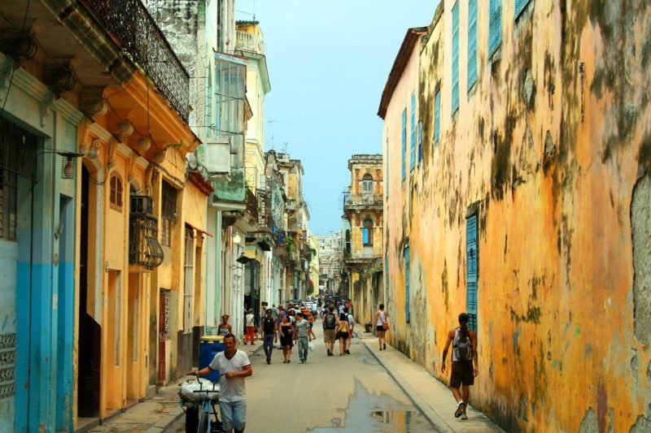
|
La Havane, c’est les demeures coloniales, les places ensoleillées, le voitures de collections. C’est aussi l’estrade sur laquelle Castro a prêché la révolution, le cabaret Tropicana, l’usine vétuste dédiée à la production de cigares
et les vagues qui viennent s’écraser sur le Malecón. Ville mythique chargée d’histoire, La Havane est sans conteste la destination numéro 1 des voyageurs qu’elle fait rêver. Visiter Cuba, c’est donc la découvrir pour en saisir
toute l’atmosphère. Pour s’en imprégner, laissez-vous porter dans la vieille ville au gré des ruelles, partez à la rencontre des locaux réputés pour leur accueil chaleureux, marchez sur les pas d’Ernest Hemingway (auteur du livre
« Le Vieil Homme et la Mer »), visitez ses monuments phares comme la Cathédrale San Cristobal ou le cimetière de Christophe Colomb, goûtez aux spécialités locales le temps d’une visite gastronomique et adonnez-vous à quelques pas
de salsa dans une des écoles de danse cubaines. |
Veronica
|
Musée national des beaux-arts de Cuba |
| Santiago de Cuba |
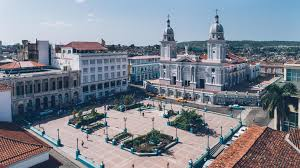
| Santiago, c’est la ville qui respire la vie. Ancienne capitale de Cuba, elle est le portrait de tout un patrimoine où la vie s’écoule au rythme de la scène culturelle. Si elle accueille chaque année son propre carnaval, Santiago
n’attends pas pour autant l’événement pour faire chanter et danser ses habitants. Théâtre de concerts prisés par la population locale et les visiteurs, on y vient pour s’imprégner de cette vie qui lui est propre. Outre ses
talents artistiques, Santiago est aussi classée au patrimoine mondial de l’UNESCO, et vous en découvrirez la raison quand vous la visiterez : la Maison de Diego de Velazquez, la Cathédrale de la Asunción, le cimetière de Santa
Ifigenia (où reposent Fidel Castro et José Marti) ou encore le le Parc Cespedes suffisent à eux-mêmes pour témoigner de la richesse des lieux
|
Monika
|
Festival de la Trova |
| Trinidad |
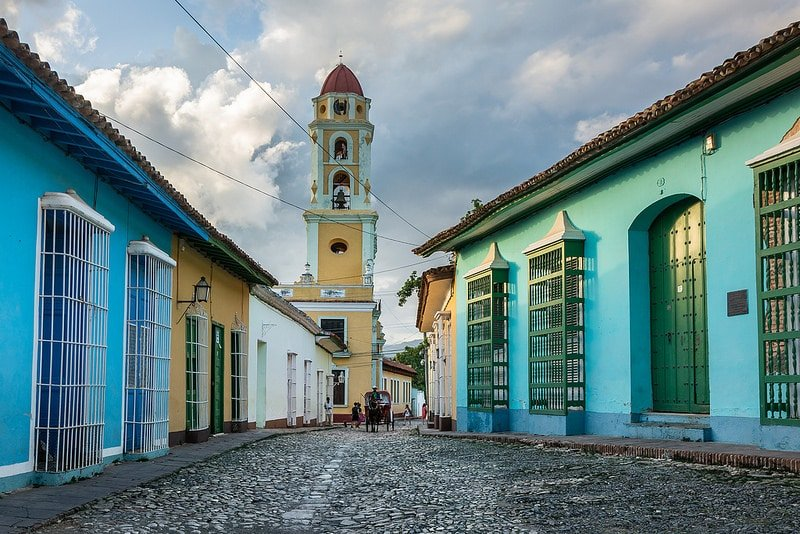
|
Classée au patrimoine mondial de l’UNESCO, cette ville est souvent élue coup de cœur par les voyageurs qui en font la rencontre. Réputée pour son centre historique aux maisons colorées et calèches typiques, la cité coloniale symbolise
la vie cubaine dans toute sa splendeur. Ici, la musique rythme les rues pavées d’un refrain local, les musiciens de rue lui donnent toujours le LA et les concerts de musique locale de la Casa de la Musica et de la Trova font le
plein chaque soir. Pour un aperçu plus historique et patrimonial, rendez-vous au musée de l’architecture de la Plaza Mayor ou le Couvent Saint-François d’Assise. Enfin pour une excursion nature, les cascades de Topes de Collantes,
les chutes El Rocio et la Vallée des moulins à sucre vous promettent une parenthèse aussi paradisiaque que luxuriante. |
Javier
|
Plaza Mayor |
| Baracoa |
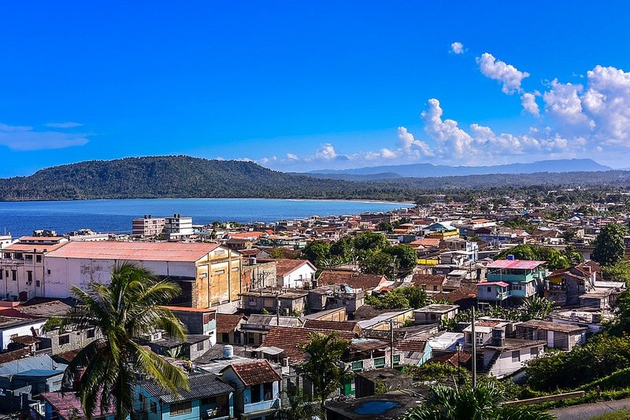
|
Peu de gens connaissent les trésors de Baracoa. Petite ville de pêcheurs situé dans l’Oriente à 4 heures de Santiago de Cuba (de l’autre côté de l’île), Baracoa est une adresse pour l’instant préservée du tourisme de masse. Nichée
au milieu d’une nature luxuriante, la ville est un diamant brut et authentique qui en fait un incontournable d’un voyage à Cuba. Son cadre de vie tranquille, ses sites archéologiques, sa vue imprenable sur le mont El Yunque , sa
Boca de Yumuri, ses petites plages préservées et ses terrasses aux odeurs appétissantes diffusent une atmosphère particulière, de celles qui appellent juste à se laisser porter. En somme, Baracoa promet avant tout de visiter Cuba
en passant par un petit coin de paradis. |
Juan
|
Les Cascades du parc naturel El Campismo |
| Baie des Cochons |
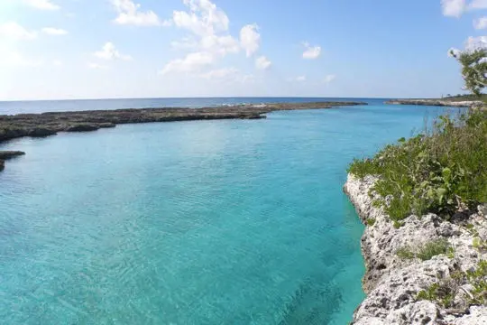
|
la Baie des Cochons relate avant tout l’histoire d’une tentative d’invasion militaire de Cuba en avril 1961 par des exilés cubains, soutenus par les États-Unis. C’est à cet endroit, en apparence tranquille, qu’a eu lieu ce fameux débarquement.
Aujourd’hui, elle dresse le portrait d’un lieu très contrasté, qui attire autant qu’il peut repousser. Quelque peu défigurée par son histoire, la Baie des Cochons cache pourtant encore, des petits coins de paradis qui méritent
le détour. Parmi eux, on notera Punta Perdiz et Caleta Buena, (des piscines naturelles reliées par la mer), la lagune Boca de Guama et La Cueva de los Peces.
|
Maria
|
Le débarquement |
| Playas del Este |
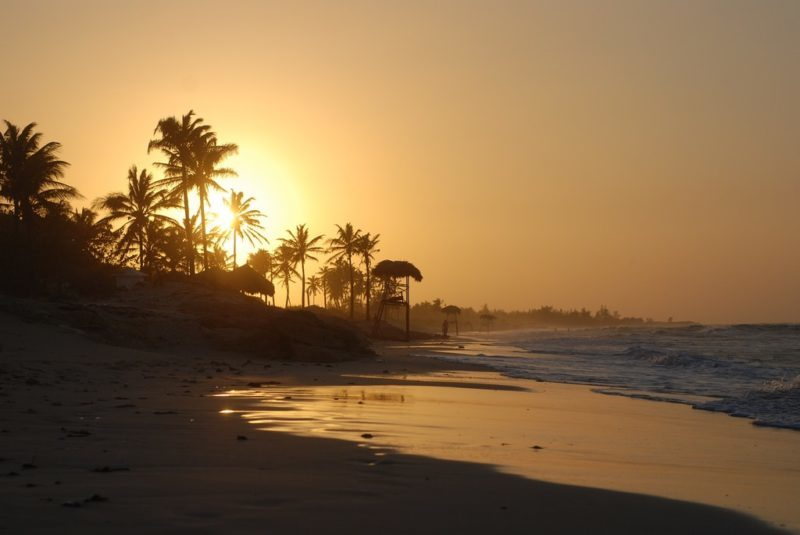
|
Sur les plages à l’Est de La Havane, rendez-vous dans les eaux chaudes où la culture locale vous accueille là encore, les bras grands ouverts. Et pour cause, ce sont les plages favorites des locaux tandis que la plupart des touristes
se ruent vers les destinations plus connues comme Varadero ou Cayo Coco. Les Playas del Este comprennent les plages de Bacuranao, Tarará, El Mégano, Santa María del Mar, Boca Ciega et Guanabo. Si elles restent tout de même prisées
(ne vous attendez pas aux plages désertes), elles ont ce petit quelque chose que les autres, plus bling bling, n’ont pas vraiment : une certaine authenticité qui à coups sûrs, vous plongera littéralement dans la vie cubaine, la
vraie.
|
Yosniel
|
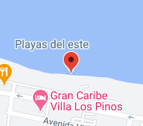
|
| Santa Clara |
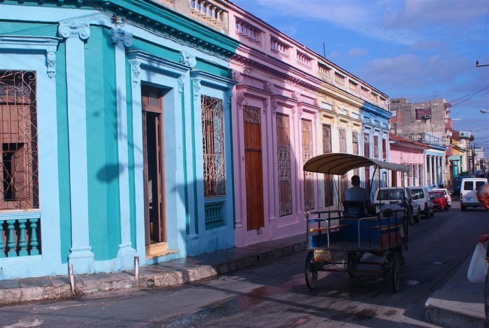
|
est suffisamment mystérieuse pour vous attirer à elle seule. Et si vous êtes intéressé(e) par l’histoire de la révolution cubaine et que vous vous demandez que faire à Cuba en la matière, alors considérez cette ville comme un incontournable.
Et pour cause, la dernière opération de la révolution a été menée ici ! Aujourd’hui, Santa Clara est un sanctuaire pour les amateurs et passionnés car elle abrite également le mausolée impressionnant de Che Guevara, érigé en la
mémoire du révolutionnaire. Lors de votre passage, prolongez votre balade jusqu’à la cathédrale Santa Clara de Asis, mais aussi le parc Leoncio Vidal, ou encore le théâtre La Caridad. Perdez-vous dans les petites ruelles au son
des musiciens de rue, vous y découvrirez une architecture typiques dans laquelle petits cafés et autres terrasses ont élu domicile. |
Yanet
|
Mausolée Che Guevara |
| Carnavals Santiago de C./La Havane |
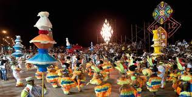
|
Le Carnaval de Santiago de Cuba est le plus célèbre et le plus important Carnaval du pays et même des Caraïbes. Il est célébré à lhonneur du saint patron de la ville, Santiago Apostolo. Le carnaval se déroule chaque année la dernière
semaine du mois de juillet, généralement il a lieu entre le 24 et le 26 du mois. Le Carnaval de la Havane a lieu chaque week-end du 15 juillet au 15 août. Cest le second plus important carnaval du pays, après celui de Santiago.
Au programme : défilés de chars, spectacles de comparsas (troupes populaires cubaines), danses, musiques africaines, animations pour les grands et les petits, spectacles de rues, concours du meilleur... |
Javier
|
Festival de la Trova |
| Les 14 plus beaux spots de plongée |
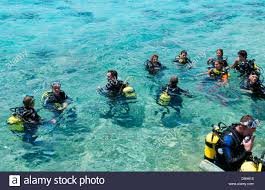
|
Avec ses 5 700 kilomètres de côtes, protégées en partie par une barrière corallienne, et ses quelque mille six cent îlots, l’île de Cuba est une destination idéale pour explorer les fonds marins. Cela est d’autant plus vrai, que le
pays compte plus de cinq cents spots de plongée sous-marine, dont certains sont considérés par les amateurs du genre comme les plus beaux au monde. Il faut dire qu’à Cuba, les eaux sont cristallines et la barrière de corail particulièrement
bien conservée. Enfilez votre masque et votre tuba ! Vous devriez croiser une faune aquatique abondante et très diversifiée, le tout dans une eau dont la température ne descend jamais en dessous de 24 degrés. Le paradis ! |
Yvan
|
Jibacoa |
| Apprendre à danser |
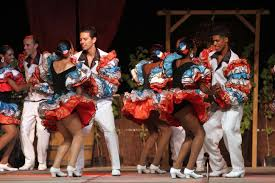
|
Le style cubain (ou casino) Il vient de la danse casino des années 1950 et prend ses racines dans le son cubain : très africain, « dans le sol », les gestes sont économisés (on peut le danser dans des endroits bondés), les passes épurées,
il n'y a pas de jeux de jambes. Le couple se déplace essentiellement en décrivant des cercles successifs. C'est avant tout une danse de la rue, populaire, sociale. Il se danse normalement sur le temps "1", au contraire du son cubain
traditionnel où le "1" est suggéré par une mise en suspension du corps. La rueda de casino, une variante de ce style, consiste en des rondes (rueda) de couples où un meneur annonce les passes à venir. Tous les danseurs effectuent
ces passes en même temps, de sorte que les danseurs changent fréquemment de partenaire. |
Luis
|
Casa de la Musica |